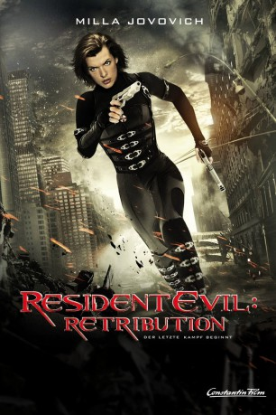

 
 IMDB-Wertung: 5.4 / 10
IMDB-Wertung: 5.4 / 10  Metascore:
Metascore: 
Der tödliche T-Virus, den die Umbrella Corporation in die Welt gesetzt hat, breitet sich weiter aus und verwandelt die Weltbevölkerung in fleischfressende Untote. Alice ist wieder einmal die letzte Hoffnung für die Menschheit. Sie erwacht Mitten im Herzen der verborgensten Einrichtung von Umbrella und deckt mehr und mehr ihrer mysteriösen Vergangenheit auf, während sie immer tiefer in den Gebäudekomplex vordringt. Alice setzt ihre Jagd nach den Verursachern der Seuche fort, die sie von Tokio nach New York, Washington DC und Moskau führt. Sie gipfelt in einer erstaunlichen Enthüllung, die sie dazu bewegen wird alles zu Überdenken, was sie einst für wahr hielt. Unterstützt von neuen Gefährten und alten Freunden muss Alice um ihr Leben kämpfen, bis sie schließlich dieser gefahrvollen Welt, die kurz vor ihrer vollständigen Zerstörung steht, entfliehen kann. Der Countdown hat begonnen...
Jahr: 2012
Dauer: 95 Minuten
FSK: 16
Land: Deutschland Studio: Constantin FilmTonspuren: DTS - ,
Untertitel:
Auflösung: 1080p (1920x800) Größe: 6164 MB
Genre: Action, Thriller, Horror, Sci-Fi
Regisseur: Paul W.S. Anderson
Drehbuch: Terrence Malick
Soundtrack:
Darsteller:
 Michelle Rodriguez als Rain
Michelle Rodriguez als Rain Boris Kodjoe als Luther West
Boris Kodjoe als Luther West Kevin Durand als Barry Burton
Kevin Durand als Barry Burton Oded Fehr als Todd / Carlos
Oded Fehr als Todd / Carlos Razaaq Adoti als Sgt. Peyton Wells , archive footage
Razaaq Adoti als Sgt. Peyton Wells , archive footage Kim Coates als Bennett , archive footage
Kim Coates als Bennett , archive footage Thomas Kretschmann als Major Tom Cain , archive footage
Thomas Kretschmann als Major Tom Cain , archive footage Eric Mabius als Matt Addison , archive footage
Eric Mabius als Matt Addison , archive footage James Purefoy als Spence Parks , archive footage
James Purefoy als Spence Parks , archive footageDatei: X:\7+mehr(A-Z)\Resident Evil\Resident Evil 5 - Retribution (2012, FSK16, 1920x800) 3D.mkv seit 13.03.2017
Festplatte: HD Collection-7+mehr(A-Z)+Person
 Es gibt insgesamt 15 Filme in der Gruppe '7+mehr(A-Z)\Resident Evil'
Es gibt insgesamt 15 Filme in der Gruppe '7+mehr(A-Z)\Resident Evil'